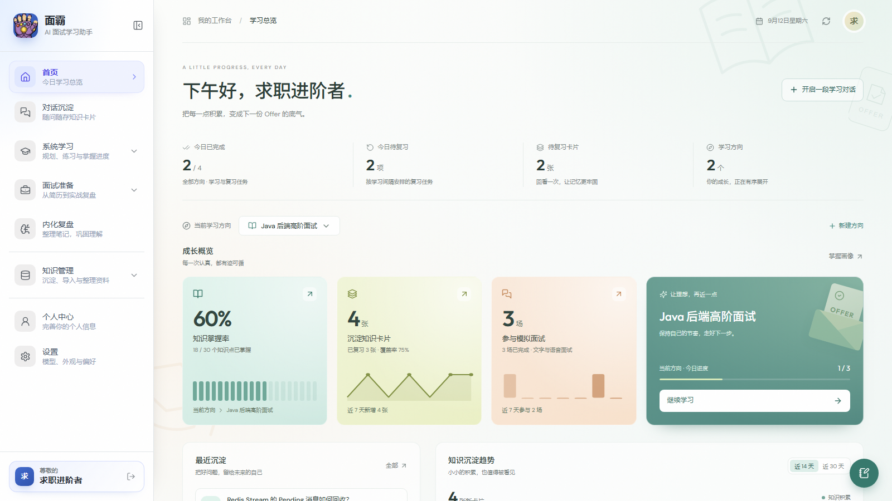

01 / KNOWLEDGE LIBRARY
知识库，成为所有学习的起点
PDF、Word、Markdown 与文本按标题层级提取章节索引，保留原文件，并记录资料正在被哪个学习计划或模拟面试使用。
- 章节级索引与知识主题
- 基于资料生成计划与面试
- 原文件查看与 AI 重新整理
让资料变成有依据的学习计划，让每次问答沉淀为长期记忆，再用文字与语音面试检验真正的掌握。

知识库不再只是文件列表，对话也不再是一次性回答。新版本把资料、计划、练习、面试和复盘连接成可持续的成长路径。
PDF、Word、Markdown 与文本按标题层级提取章节索引，保留原文件，并记录资料正在被哪个学习计划或模拟面试使用。
保持多轮上下文，每组问答可单独存卡；代码块一键复制，回答流式生成、自动跟随，也能随时停止。
对话支持加号与拖拽添加 PDF、Word、文本和代码；简历与知识库导入也提供拖拽交互。
DeepSeek、Kimi、Qwen、GLM 等常用 Provider 自动带出地址与模型列表；自定义 Provider 仅在本机记忆，可随时删除。
不是把许多页面摆在一起，而是让数据在学习流程中持续流动。
保留原文，提取章节与主题
基于资料与目标规划知识点
拆分子知识点，边学边问
卡片与薄弱点按间隔回访
用文字或语音检验表达
面霸把能确定的教学决策交给服务端算法，把生成、解释和追问交给模型，让学习路径可追踪、可复习、可验证。
从知识库选择资料，结合目标生成更有边界的学习方向、层级知识点与练习范围。
知识点拆成子点逐个讲解；根据实际问过的内容评分，看理解而不是死扣表达。
知识卡片、练习结果与薄弱点进入复习排程，掌握度按概念持续更新。
上传并管理多份简历，提炼亮点与改进项，也可以把简历作为模拟面试的出题依据。
组合简历、学习方向和知识库资料控制出题重点，支持追问、倒计时与结束评估。
AI 只指出遗漏、错误与改进方向，不替你写正文；支持代码、图片、实时预览和记忆口诀。
简历分析、文档索引和生成任务具备状态跟踪、重试与 Pending 回收，长任务不靠页面死等。
邮箱验证码、拼图验证和安全改密；桌面端 API Key 与自定义 Provider 优先保存在本机。
以下由当前版本真实页面配合演示数据生成，不包含任何用户隐私。点击图片可放大。
同一套 React 前端支持 Web、云端桌面和本地桌面。后端以 Spring Boot 为核心，用 PostgreSQL、pgvector、Redis Stream 与对象存储承载完整业务链路。
在线版无需安装；桌面版提供 Windows 与 macOS 构建，版本和下载链接自动跟随 GitHub Releases。